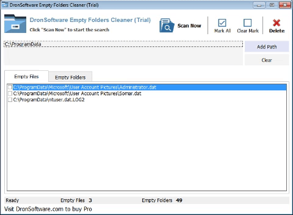

Empty Folders Cleaner
Empty Folders Cleaner is a FREE tool designed to find and delete
duplicate files over home and corporate network while no software
installed on another computer. Fast byte-to-byte comparison gives you
the accurate results and it searches duplicate file contents
regardless of filename. A list of duplicate files can be removed,
moved, or copied.
Download Free Version
Buy Pro Edition
Supports
Windows 10, 8.1, 8, 7, Vista, XP
32 bit or 64 bit
Why is finding duplicate files helpful
You may not realize how many duplicate files you have after downloaded
many files from the Internet or duplicate files scattered over your home
or corporate network. Duplicate files are usually waste and unnecessary
keeping them is merely a waste of valuable hard disk space. Your hard
drives may be full of documents, iTunes, iPod, MP3, Photos, and Videos
and many of them are redundant.
Deleting duplicates will help to speed up indexing and reduces back up
time and size. Your computer isn’t fully optimized until you’ve removed
all unnecessary clone files.
KEY FEATURES
- Powerful search engines (byte by byte and SHA-1)
- Find files with same contents, same name and zero size.
- Find duplicate pictures, videos, songs (mp3, wma, ogg).
-
Fastest among Empty Folders Cleaners and duplicate file cleaners.
-
Works with removable media devices like pendrives, external hard
disks, etc.
- Search local PC and over network.
- Identify and recover wasted disk space
- Reducing the time and media used for backups
- Minimize time used to unneeded virus scanning
-
Increase free space on "limited" resources, like laptops and
memory disks
- Reduce files searching time

Let Duplicate File Cleaner find all the duplicate files
and recover valuable disk space!
Download Free Version
Try
Empty Folders Cleaner, and you will be amazed by all those unnecessary duplicate files that
reside on your computer. And, you can delete them with confidence,
without having to compare them visually or by some other means.
P.S. Duplicate files may also known as repeated, dupe, same, double
files, identical or file copy/copies and considered as unnecessary,
unwanted, unused, redundant and junk files unless for purpose. The
process to remove duplicates is called deduplicate, dedupe,
deduplication. Clone Remover will easily help you find
and delete duplicate files.